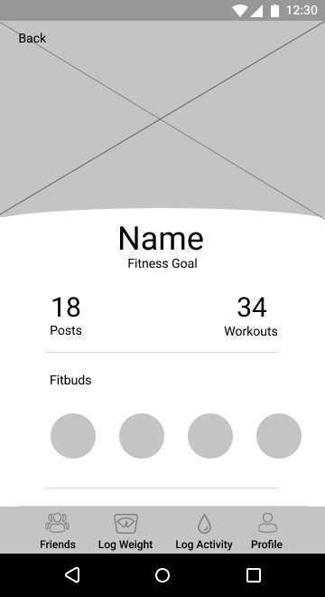
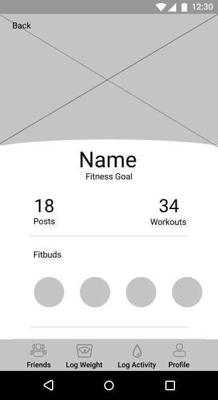

In support of the research, BURPI focused on providing the following:
Design Roles
- UX Design
- Visual Design
- Brand & Identity
Design Deliverables
- User Surveys
- Personas
- Competitive Analysis
- Concept & identity
- User Stories
- User Flows
- Prototype
- A/B and Usability Testing
- Visual Design
Specifications
Duration
- 3 months
Tools & Software
- Adobe Illsutrator
- Figma
- InVision
- Draw.io
- Usability Hub
- Maze
Discovery
The Competition


Fitness Options
Across all three platforms, the focus was on allowing users to individualize their overall fitness routine by providing them with a library of different exercises and routines. Nike and ActiveX provided a much more varied library of potential routines, while SWORKIT randomized exercises to fit into a specific time frame.
Community-Building
Nike’s focus on community was mainly through a scoreboard. While this sense of competition can be compelling for more advanced fitness participants, it can be act as a deterrent for beginners. ActiveX provided users with the ability to join packs as part of their platform, but users did not have the ability to choose members within the pack.
Early Insights
To understand what users expect and desire from their fitness application, I conducted a survey that was posted through various online platforms, including social media and fitness forums. By doing so, I received responses from a variety of sources: individuals with a fitness background and those with little experience. However, more than 50% of applicants had used or currently use some sort of fitness application.
The biggest challenge participants commonly identified regarding achieving their fitness goals is losing motivation and lacking accountability. This is partially a result of the individualistic nature of most fitness applications- the lack of community and support means there is no accountability which can then cause individuals to lose motivation.
Whose Support Keeps You Motivated?
While many may assume those with fitness goals would like the support of their family or a personal trainer, most participants (47%) in the survey surprisingly indicated that they would rather receive support from someone with similar fitness goals.
It is important to also note however, that while participants indicated they craved a sense of community, they also overwhelmingly preferred to work out alone.
What Features Do You Like Most?
User Personas
To give greater context to the results of the survey, I conducted three one-on-one interviews with participants:

- Name: Jennifer
- Age: 22
- Profession: College Graduate
Motivation
Jennifer worries that she over-exercies for her body type. She uses fitness apps to track her daily activities throughout the idea. She tries to avoid using apps to track her food intake because she finds she can become overly obsessive and too restrictive for her health and her above average fitness lifestyle.
Frustration
- Too difficult to use or track workouts
- Have to do the math myself
- Name: Emeka
- Age: 26
- Profession: HR
Motivation
When he was a child, Emeka started working out to impress a girl but now he has stayed motivated for health reasons (he has a condition called Athletic Heart Syndrome). While he was interested in apps at first, he now finds that he works best if he just commits to a simple routine. With his condition, he can’t commit to an extremenly rigorous routine.
Frustration
- Extra features seemed unnecessary
- Having so many options is distracting
- Name: Carrie
- Age: 31
- Profession: IT Recruiter
Motivation
While Carrie originally got into fitness because she was held accountable by someone else, she now really enjoys the process because it makes her feel better physically and mentally. She tries to go to the gym at least five times a week in the early mornings before work. She decided to use a fitness app because the workout she was doing was getting boring and she needed more of a challenge.
Frustration
- No way to visually track progress
Information Architecture
The User
The MVP focused on providing the following user stories:
- Sign up for an account and receive customized fitness plan
- Log a workout
- Set daily reminder to exercise
- Browse and filter suggested workouts
- Customize individual workout
- View or create friend requests


Sketches and Wireframes
Onboarding


My Plan
User Profile
 

Usability Testing
Two sets of usabilty tests were conducted, one with high-fidelity wireframes and the other with high-fidelity mockups. In my first series of user tests, I created a maze to determine the app’s ease-of-use and to quickly identify any problems in the information architecture early on. Users were asked to perform four tasks in both sets of tests:
- Sign up for an account
- Log an activity
- Create a daily reminder
- View a friend's profile
Onboarding
Participants indicated that they would prefer to see a sample of their customized fitness plan before committing to creating an account.

Navigation
When asked to log an activity, many users were unable to determine the meaning of the bottom navigation's 'plus sign', which would complete the task. The icon also enforced too many clicks to navigate to the wanted page so the bottom navigation was reconfigured for direct clicks.


Nomenclature
"Activities" vs. "Workouts"
In a second round of user testing, it became clear there was confusion distinguishing "activity" and "workout". The former was intended to categorize any activity that was not a planned workout (i.e., playing sports, walking, running). Based on user feedback, the distinction was removed and the new design allows users to select basic activities and workouts from the same screen.
Separation
Combined
"Change" vs. "Replace"
Burpi provides users with the freedom to change the day's planned workout and also the ability to edit a given workout. User testing results showed that the "Change" selection under the day's workout was causing confusion with these two distinct options. Intended for users to switch the workout to a different activity, I determined that "replace" would better inform users which action the demand coincided.

Daily Reminders
This task had over half of participants successfully navigate to the settings page in both sets of usability tests. Of those that did not complete the task successfully, they incorrectly navigated to the day’s planned workout. To accommodate these users, I decided to add a notification icon to the workout page that connects directly to the proper settings page for daily reminders.

Branding & Identity
The Logo
In determining the brand for Burpi, I developed moodboards, word-maps, and considered trends among other fitness apps. The following images were a few of the sketches developed in brainstorming the proper font-style that properly represented the style and personality of the app:
Based on feedback, two of the sketches were converted into vector images with edits:
67%
33%
A preference test was developed to determine the logo that best represented the social fitness app.
The first logo was described as being more iconic and having more visual emotion than the second. Participants also mentioned that it was more legible and energetic.
In helping to make a final decision on the logo, I also developed several mood boards that explored different color palettes and themes:
Final Design
Visual Iterations
Burpi went through several iterations based on user feedback and current design trends to create a cleaner and more engaging user interface.
- Remove color behind top navigation
- Extend highlighted workout across screen
- Lighten images and remove shadow
- Provide universal search
- Drop titles and descriptions beneath images for legibility
The MVP
Burpi is a social fitness that app provides users with personalized fitness plans and a supportive community to reach individual fitness goals.
Upon signing in, users are taken to the My Plan dashboard. It clearly features the day’s workout, but users are given the freedom to change the day’s workout with the “replace” option or skip working out entirely.
Burpi removes unnecessary pages by focusing on three main options in a carousel that users would view most often: home, my plan, and workouts. With a bottom navigation, they can also access their profile and friends with shortcuts to log a workout or log weight
The workout page is clear, providing users with the expected duration of the routine, the intensity-level, and the appropriate experience-level. It includes information about equipment users will be expected to have. Users are also given the option to customize movements that best fit their individual needs.


The Feed dashboard allows users to post their activity and see the activity of others. With a social feed similar to Facebook and Instagram, it provides a level of sociability lacking on other fitness platforms.
Users can browse workouts easily by using the carousel if they prefer more options. The app provides users with updated information on new suggested workouts and categorizes existing routines by the muscle groups targeted, the type of workout, and even positively-reviewed workouts by friends. This last feature again helps to support the feeling of community and inspiration it provides individuals towards completing their goals.

The MVP
Burpi is a social fitness that app provides users with personalized fitness plans and a supportive community to reach individual fitness goals.
Upon signing in, users are taken to the My Plan dashboard. It clearly features the day’s workout, but users are given the freedom to change the day’s workout with the “replace” option or skip working out entirely.
Burpi removes unnecessary pages by focusing on three main options in a carousel that users would view most often: home, my plan, and workouts. With a bottom navigation, they can also access their profile and friends with shortcuts to log a workout or log weight
The workout page is clear, providing users with the expected duration of the routine, the intensity-level, and the appropriate experience-level. It includes information about equipment users will be expected to have. Users are also given the option to customize movements that best fit their individual needs.
The Feed dashboard allows users to post their activity and see the activity of others. With a social feed similar to Facebook and Instagram, it provides a level of sociability lacking on other fitness platforms.
Users can browse workouts easily by using the carousel if they prefer more options. The app provides users with updated information on new suggested workouts and categorizes existing routines by the muscle groups targeted, the type of workout, and even positively-reviewed workouts by friends. This last feature again helps to support the feeling of community and inspiration it provides individuals towards completing their goals.
Prototype
 View Prototype
View Prototype
Final Thoughts
"Even if it works, there can be room for improvement"
Creating this fitness app was a very exciting process. I think the most important lesson I learned was that even well-recognized and universal designs have their problems. From the placement of reminders to the use of plus icons, the translation to Burpi was not always seamless. This once again raised the importance of testing for me. One of the main faults of my initial research phase was that I did not get an opportunity to interview individuals unaccustomed to fitness apps for my personas, though they participated in the survey. This created a gap for me in building an app that would be accessible to both experienced and inexperienced users. As such, more issues came up during usability testing; I had participants who completed tasks effortlessly while others were very confused by terminology and the organization of information. But despite these issues, creating Burpi further developed my understanding of contemporary design trends and how to critically analyze research and testing results to create reasonable solutions.